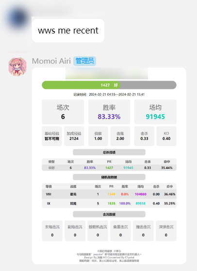
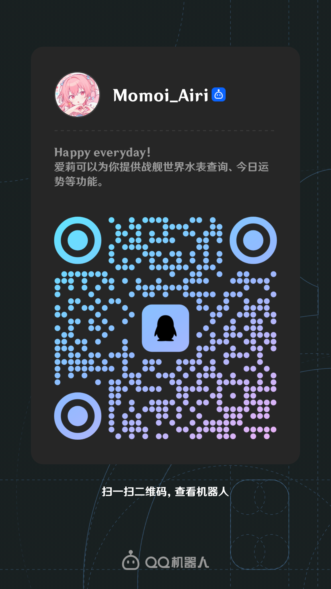

用途展示：



机器人包含以下插件：
----- 音游类综合查询 -----
- Unibot: PJSK综合查询 By Watagashi_uni
- Tsugu: Bang Dream! 综合查询
- maimai_plugin: 舞萌DX查分插件
----- 窝窝屎综合查询 -----
- HikariBot(yuyuko): 窝窝屎水表查询 By 西行寺雨季，本心
- KokomiBot v4 Airi Cust. Ver.: 窝窝屎水表查询 By Maoyu，田麻小溪
- cq-wows-render: 渲染wowsreplay文件至视频
----- 棋类游戏 -----
- chess: 五子棋，黑白棋，围棋
- cchess: 中国象棋
----- 娱乐功能 -----
- Momoi Airi Collection: 签到+收藏小游戏 By 田麻小溪
- 今日运势: 测测你的今日运势 By MinatoAquaCrews
- tarot: 塔罗牌占卜 By MinatoAquaCrews
- 今日老婆: 随即抓取群友做老婆 By glamorgan9826
- whateat-pic: 今天吃什么 By Cvandia
- Simplemusic: 点歌插件 By MeetWq
- Memes: 表情包制作 By MeetWq
- PJSK表情包制作: 字面意思 By lgc-NB2Dev
- emojimix: emoji合成
----- 基础插件 -----
- Learning-Chat: 鹦鹉学舌插件 By CMHopeSunshine
- Airi-Help: 显示帮助消息
※ 群内发送"帮助"，爱莉会回复指令列表
认领流程：
- 添加主人田麻小溪的QQ（搜索QID：TenmaSakii），表明来意。
- 放主人进群，主人会开展一段时间的群审核，重点检查敏感信息、违法违规信息等。
- 若通过群审，主人会放爱莉进群。
认领须知：
- 本机器人基于个人QQ号搭建，因不可抗力因素，主人无法保证机器人的使用寿命。
- 机器人承载能力有限，请适度使用。
- 如需添加水表监控(yuyuko的功能)，请联系主人。
2024.8补充: 蓝标爱莉
除上述功能外，爱莉还提供QQ官方机器人（蓝标）版本。
相较于普通版本，蓝标爱莉运行相对稳定、响应速度更快，且入群方便、无需审核，但是功能上做了精简,目前仅保留kokomi、jrys、签到、pjskbq以及roll五个插件。请考虑仔细后自行决定拉哪个爱莉进群。
蓝标爱莉二维码：
